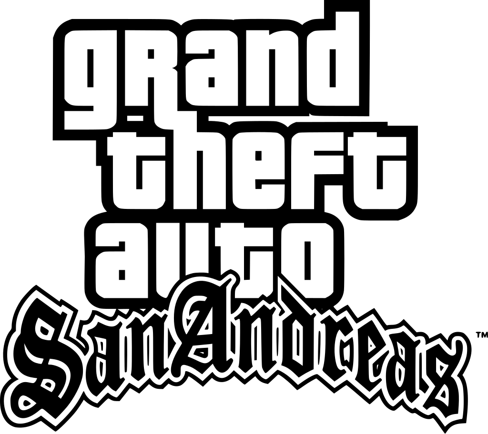

Grand Theft Auto: San Andreas (abreviado como GTA: San Andreas) es un videojuego de acción-aventura de mundo abierto de disparos en tercera persona desarrollado por Rockstar North y publicado por Rockstar Games. Es el quinto videojuego principal de la serie Grand Theft Auto, después de Grand Theft Auto: Vice City de 2002, y la séptima entrada en general. Ambientado en el estado estadounidense ficticio de San Andreas, el juego sigue a Carl "CJ" Johnson, que regresa a casa después del asesinato de su madre y descubre que su antigua pandilla callejera ha perdido gran parte de su territorio. En el transcurso del juego, intenta reconstruir la pandilla, se enfrenta a autoridades corruptas y criminales poderosos, y poco a poco desentraña la verdad detrás del asesinato de su madre. El juego se juega desde una perspectiva en tercera persona y se navega por su mundo a pie o en vehículo. El diseño de mundo abierto permite al jugador recorrer libremente San Andreas, que consta de tres ciudades metropolitanas importantes: Los Santos, San Fierro y Las Venturas, basadas en Los Ángeles, San Francisco y Las Vegas, respectivamente. Rockstar realizó una investigación in situ en cada ciudad y consultó a DJ Pooh, Estevan Oriol y Mister Cartoon, nativos de Los Ángeles, para que les ayudaran a imitar la cultura de la ciudad. La narrativa se basa en múltiples eventos de la vida real en Los Ángeles, incluida la rivalidad entre las pandillas callejeras Bloods y Crips, la epidemia de crack de la década de 1990, los disturbios de Los Ángeles de 1992 y el escándalo de Rampart. El equipo de desarrollo de 50 personas pasó casi dos años creando el juego. San Andreas se lanzó en octubre de 2004 para PlayStation 2. El juego recibió elogios de la crítica por sus personajes, narrativa, diseño de mundo abierto y fidelidad visual, pero hubo respuestas mixtas hacia el diseño de la misión, los problemas técnicos y la representación de la raza. Generó controversia cuando se descubrió el minijuego sexual oculto "Hot Coffee", lo que requirió brevemente que el juego fuera clasificado solo para adultos. San Andreas recibió elogios de fin de año de varias publicaciones de juegos, y es considerado uno de los títulos más importantes de la sexta generación de juegos de consola y uno de los mejores videojuegos jamás creados. Se lanzó para Windows y Xbox en 2005, seguido de las versiones mejoradas y adaptaciones móviles en la década de 2010, y una versión remasterizada en 2021. San Andreas es el juego de PlayStation 2 más vendido con más de 17,3 millones de copias vendidas y uno de los juegos más vendidos de todos los tiempos con 27,5 millones de copias vendidas en total. Su sucesor, Grand Theft Auto IV, fue lanzado en abril de 2008.
